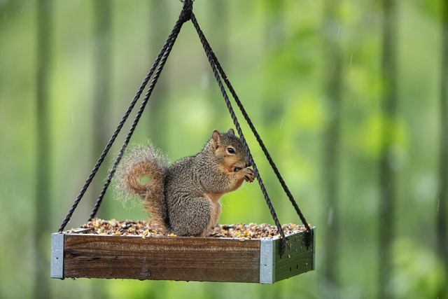
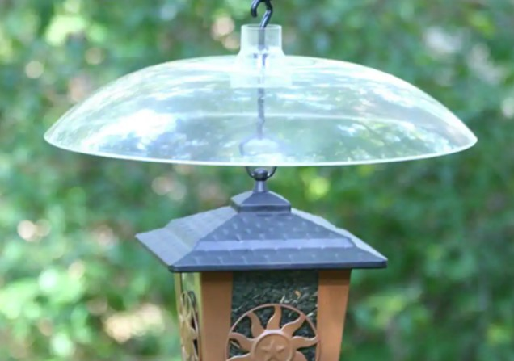

Keeping Squirrels Off Feeders

If you like to keep the local birds fed, chances are you'll also see other uninvited guests stealing seed meant for your feathered friends.
Keep any squirrels away from bird feeders humanely with these tips.
- 1. Poles
- If you have your bird feeder on a pole, make sure the pole is made of smooth metal with the bird feeder at least six feet high and away from any launching points such as trees, bushes, porches etc. Squirrels cannot jump more than 5 feet up in the air, 10 feet across from one point to another and for anything that is higher than 10 feet, they’ll quickly give up.
- 2. Buy a Baffle
- You can get a squirrel baffle in most hardware stores. They are designed to baffle squirrels. The idea is that it will stop squirrels from reaching your bird feeder. Smooth baffles, which are plastic or metal contraptions placed above and below bird feeders, seem to work well. The baffles should be at least 15-20 inches wide to stop the squirrels from reaching the bird feeder. They usually rock or tilt when stepped on, giving these acrobatic nuisances a real challenge.

- 3. Invest in a Squirrel-Proof Bird Feeder
- If you cannot place your feeder in a location squirrels can’t get to, consider investing in a squirrel-proof feeder. They come in a variety of styles, some employing cages, others using spring-loaded doors to help keep squirrels at bay.
- 4. Lace Seed With Hot Peppers
- Capsaicin, the compound in hot peppers that makes your tongue burn, only affects mammals—not birds. You can purchase capsaicin-coated bird feed products, suets, and sauces on the market and mix them in your bird seed to deter them. And a light sprinkle of cayenne pepper on the ground under the feeder should also encourage them to keep them away.
- 5. Keep Ground Clean
- Keep the surroundings of your bird feeder clean and free of fallen seeds and fruit. Anything spilled on the ground from the bird feeder is a squirrel invitation - this is one of their main food sources. It also helps the birds to avoid disease and contamination if they don’t peck at the debris.